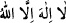

<a name=4363></a><br/>
<br/>
<i>Eğer sonun iyi ve hüsn-i hâtime ise.</i><br/>
Allah Teâlâ’dan imanımızın nûrunu ve îtikadımızın ışığını zeval kasırgasından<br/>
muhafaza etmesini ve ayaklarımızın bütün zaman ve durumlarda sabit söz “<br/>Lâilâhe illallah” ile sâbit kılmasını dileriz.<br/>
